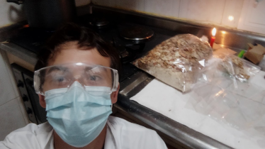

Ecologico
Dureza

Resistencia

Sostenibilidad
Home
Los bloques de micelio son un ejemplo de
biomaterial el cual está conformado de
“Micelio” que es el aparato vegetativo de los
hongos, este tiene una estructura similar a
cuerdas delgadas denominadas como hifas,
cuando un especie de hongo crece en un
material empieza a colonizar y a generar
estructuras con las hifas que componen el
micelio. Es posible hacer un bloque de
construcción a partir de material vegetal como
sobras de comida, restos de madera y
algunos plásticos en los que crece el hongo,
matando la materia viva de hongo cocinando
el bloque. (Puntosustentable, 2022, 13
februari)
LADRILLOS DE MYCELIO
Ladrillos con una increible capacidad de dar un hogar
a millones de personas
El ingeniero
Luis Alejandro Rodriguez Arenas
Ecologico
Dureza
Resistencia
Sostenibilidad
D
I
S
E
Ñ
O
3
D
Dentro del desarrollo de los ladrillos de
micelio tambien se utilizan tecnologías como
la impresión 3D y el desarrollo de moldes
que permiten uniformidad entre los ladrillos